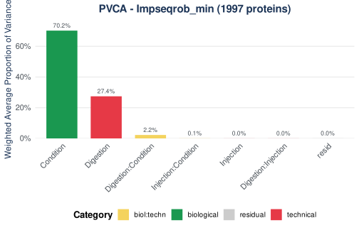
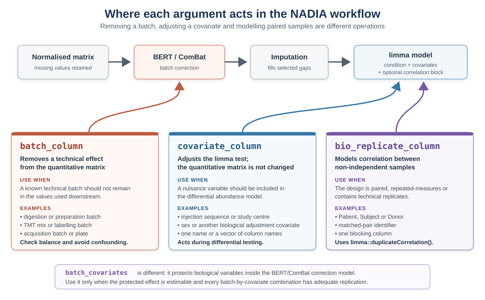
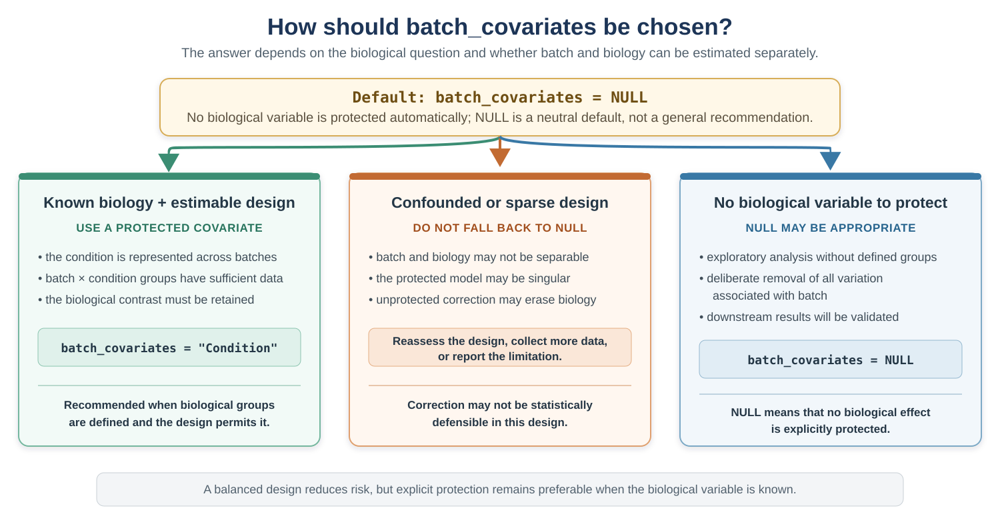
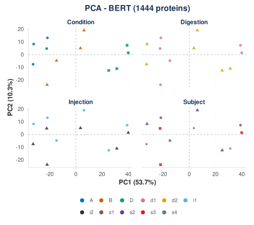
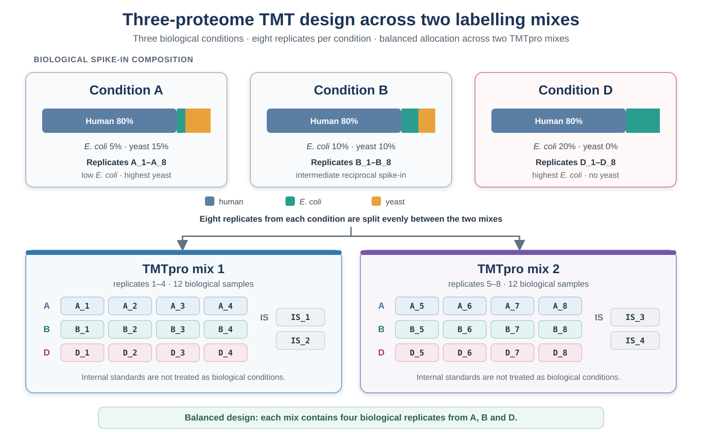
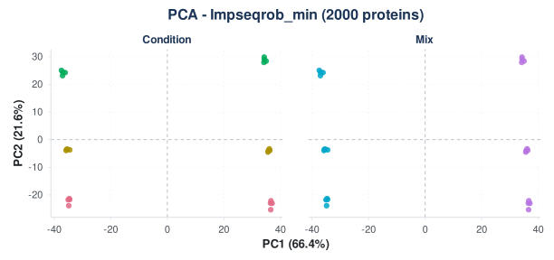
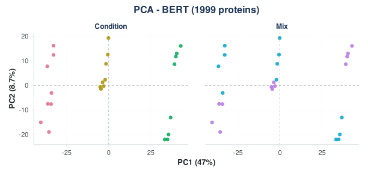

Batch correction: diagnose, correct, verify
Sergio Ciordia
Source:vignettes/batch-correction.Rmd
batch-correction.RmdIntroduction
Samples prepared on different days, labelled in different batches or acquired in different run sequences may contain systematic technical differences. Batch correction aims to remove this unwanted variation while retaining the biological signal. If the experimental design is confounded or the correction is applied without adequate checks, biological variation may also be removed.
BERT
is fully integrated into NADIA, and all matrix-level batch correction in
this vignette is performed through it. BERT is designed for the
integration of incomplete omic profiles. Rather than requiring a single
complete matrix, it decomposes the integration into pairwise
batch-correction steps arranged as a binary tree. Each step applies the
selected correction method, such as ComBat or limma, and the corrected
branches are then combined. This hierarchical strategy allows NADIA to
correct the normalised protein-abundance matrix before imputation,
without first replacing its missing values.
This vignette therefore follows a simple rule: diagnose before correcting and verify afterwards. Using a simulated batch effect, it shows how to assess the design and technical variation, choose the variables to remove or protect, apply and verify BERT, and distinguish matrix correction from covariate adjustment in the differential abundance model. It also explains why later principal components and sequential correction require particular care.
The same workflow is then applied to a real two-mix TMT experiment. Its known three-proteome spike-in design allows uncorrected, corrected and condition-protected results to be evaluated by variance decomposition, PCA and differential abundance benchmarking. The example highlights the effects on sensitivity and specificity, together with the importance of the fold-change threshold and TMT ratio compression.
Installation
if (!requireNamespace("BiocManager", quietly = TRUE))
install.packages("BiocManager")
BiocManager::install("NADIA")Batch correction needs BERT and the variance
decomposition needs lme4; both are optional
dependencies:
have_bert <- requireNamespace("BERT", quietly = TRUE)
have_lme4 <- requireNamespace("lme4", quietly = TRUE)
c(BERT = have_bert, lme4 = have_lme4)
#> BERT lme4
#> TRUE TRUEThe sample annotation
The example dataset does not contain a recorded batch variable. To demonstrate the workflow, we create a hypothetical sample annotation with two digestion days, two injection sequences and four subjects. These variables are arranged so that each condition is represented at every level of the technical factors.
In a real analysis, these variables should come from the experimental
sample sheet rather than being inferred from the quantitative values.
The Column field must match the sample identifiers used by
the pipeline:
md <- nadia_dia$metadata
covariates <- data.frame(
Column = md$Coding,
Digestion = rep(c("d1", "d2"), length.out = nrow(md)),
Injection = rep(c("i1", "i1", "i2", "i2"), length.out = nrow(md)),
Subject = rep(paste0("s", 1:4), length.out = nrow(md)),
stringsAsFactors = FALSE)
covariates
#> Column Digestion Injection Subject
#> 1 A_1 d1 i1 s1
#> 2 A_2 d2 i1 s2
#> 3 A_3 d1 i2 s3
#> 4 A_4 d2 i2 s4
#> 5 B_1 d1 i1 s1
#> 6 B_2 d2 i1 s2
#> 7 B_3 d1 i2 s3
#> 8 B_4 d2 i2 s4
#> 9 D_1 d1 i1 s1
#> 10 D_2 d2 i1 s2
#> 11 D_3 d1 i2 s3
#> 12 D_4 d2 i2 s4A simulated batch effect
The annotation defines the groups but does not create a batch effect. We therefore introduce a simulated effect so that its removal can be evaluated against a known starting point.
The simulated effect is deliberately protein-dependent: in the second digestion batch, half of the proteins are multiplied by six and the remainder by one sixth. A uniform shift affecting every protein similarly may be largely removed by normalisation, whereas protein-specific technical effects can remain and may require explicit batch correction.
The six-fold change is intentionally large. The biological conditions in this dataset are already strongly separated, and a smaller simulated batch effect would be difficult to see in the diagnostic figures. Its magnitude is chosen for illustration and should not be interpreted as a typical batch effect.
batched <- nadia_dia
qcols <- grep("^PG.Quantity_", colnames(batched$protein_quant))
samples <- sub("^PG.Quantity_", "", colnames(batched$protein_quant)[qcols])
d2_cols <- qcols[samples %in% covariates$Column[covariates$Digestion == "d2"]]
set.seed(1)
up <- sample(c(TRUE, FALSE), nrow(batched$protein_quant), replace = TRUE)
batch_multiplier <- ifelse(up, 6, 1 / 6)
batched$protein_quant[, d2_cols] <-
batched$protein_quant[, d2_cols] * batch_multiplier
length(d2_cols) # the six samples digested on day 2
#> [1] 6All subsequent results are calculated from this modified dataset.
Step 1: is the design suitable for batch correction?
Before choosing a correction model, cross-tabulate the biological and technical factors and count the samples in each combination:
table(Digestion = covariates$Digestion, Injection = covariates$Injection)
#> Injection
#> Digestion i1 i2
#> d1 3 3
#> d2 3 3
table(Condition = md$R.Condition, Digestion = covariates$Digestion)
#> Digestion
#> Condition d1 d2
#> A 2 2
#> B 2 2
#> D 2 2Both tables are complete: every digestion day contains both injection sequences, and every condition occurs on both digestion days. The design therefore provides information with which to distinguish the simulated digestion effect from the biological conditions.
If a condition occurred in only one digestion batch, condition and batch would be completely confounded. Their effects could not be estimated separately: the correction might fail, or it might remove part of the biological difference with the batch effect. These tables are therefore an essential first diagnostic, although they should be followed by the post-correction checks shown below.
Minimum replication required by BERT. BERT requires
at least two samples in every batch. When batch_covariates
are supplied, this requirement applies to each combination of batch and
protected-covariate levels. In addition, a protein must have at least
two non-missing quantitative values within each of these combinations
for BERT to estimate its correction. Insufficient replication can make
individual proteins unadjustable and, when it affects many proteins, may
prevent the batch-correction model from being fitted.
Step 2: how much variance does the batch explain?
Before correcting the batch effect, we first process the modified
dataset with batch correction disabled. This provides the normalised and
imputed assay that will serve as the uncorrected reference. We can then
use pvca_analysis() to estimate how much of its variation
is associated with the biological condition and how much is associated
with the digestion and injection factors.
res <- process_proteomics(batched, covariate_df = covariates, verbose = FALSE)pvca_analysis() uses the selected principal components
to estimate the share of variation associated with the specified
biological and technical factors. With the default settings, it reports
the following result:
pvca_default <- pvca_analysis(
res$se_proc,
assay_name = "Impseqrob_min",
technical_factors = c("Digestion", "Injection"),
biological_factors = "Condition",
verbose = FALSE)
pvca_default$variance_components
#> label weights category
#> 1 Condition 0.998364396 biological
#> 2 Below 1% 0.001635604 residualCondition accounts for almost all of the reported variation, while digestion is absent from the table. This is surprising because the simulated digestion effect is known to be present.
Why the default hides it, and what to do
pca_threshold determines how many principal components
are included: components are retained until their cumulative explained
variance reaches the selected threshold, which is 60% by default. In
this experiment, the biological conditions are strongly separated and
PC1 alone exceeds 60%. The simulated digestion effect is represented by
later components, which are excluded from the default decomposition.
Raise the threshold and it appears:
pvca_before <- pvca_analysis(
res$se_proc,
assay_name = "Impseqrob_min",
technical_factors = c("Digestion", "Injection"),
biological_factors = "Condition",
pca_threshold = 0.95,
variance_threshold = 0,
verbose = FALSE)
pvca_before$variance_components
#> label weights category
#> 1 Condition 0.7021393041 biological
#> 2 Digestion 0.2742117240 technical
#> 3 Digestion:Condition 0.0222670777 biol:techn
#> 4 Injection:Condition 0.0005412450 biol:techn
#> 5 Injection 0.0002479839 technical
#> 6 Digestion:Injection 0.0001029350 technical
#> 7 resid 0.0004897303 residualAfter increasing the threshold, digestion accounts for 27.4% of the weighted variation and condition for 70.2%. The batch effect does not need to dominate the dataset to influence the downstream analysis. These proportions describe how the retained components are partitioned; they do not define a universal threshold above which correction is required.
A decomposition that reports no technical contribution is therefore not, by itself, evidence that the data contain no technical structure. Always check how many principal components were retained and whether later components contain a recognisable batch pattern.
pvca_before$plot
PVCA before correction, using enough principal components to explain 95% of the variance.
Step 3: correct, and keep the biology
Batch correction is optional and is disabled by default. To apply it
within process_proteomics(), set
batch_correct = TRUE and use batch_column to
identify the technical factor that should be removed. Two related
arguments, covariate_column and
bio_replicate_column, describe variables that should be
modelled during differential abundance analysis rather than removed from
the quantitative matrix. The three arguments therefore have distinct
roles and should be defined according to the experimental design:
| Argument | Effect |
|---|---|
batch_column |
identifies the technical factor to be removed from the quantitative matrix |
covariate_column |
adds one or more variables to the limma differential abundance model |
bio_replicate_column |
defines a blocking factor for samples that are not independent |
Here, batch_column = "Digestion" asks BERT/ComBat to
estimate and remove the digestion-day effect. By contrast,
covariate_column = "Injection" does not alter the
quantitative matrix: it includes injection sequence as a term in the
subsequent limma model. Finally,
bio_replicate_column = "Subject" uses
limma::duplicateCorrelation() to account for the
correlation between samples from the same subject rather than treating
all samples as independent.
The diagram below places the three arguments in the complete workflow and shows typical variables that can be supplied to each one. Click the figure to enlarge it.

The three arguments act at different stages: batch_column modifies the quantitative matrix, whereas covariate_column and bio_replicate_column act during differential abundance analysis.

res_bc <- process_proteomics(
batched,
covariate_df = covariates,
batch_correct = TRUE,
batch_column = "Digestion",
batch_algorithm = "ComBat",
batch_ComBat_mode = 1,
covariate_column = "Injection",
bio_replicate_column = "Subject",
verbose = FALSE)
SummarizedExperiment::assayNames(res_bc$se_proc)
#> [1] "raw" "log2" "cycloess" "BERT"
#> [5] "Impseqrob_min"Note where the new BERT assay sits: after
cycloess, before the imputed matrix. Correction runs on the
normalised data, and imputation then runs on its output.
Protecting a variable inside ComBat
batch_column tells BERT/ComBat which technical
grouping should be removed. batch_covariates tells
it which biological groupings should be protected while that
correction is estimated. For example, using
batch_column = "Batch" together with
batch_covariates = "Condition" asks the model to remove
differences between batches without treating condition-related variation
as part of the batch effect.
This still differs from covariate_column. A protected
batch_covariates variable enters the BERT/ComBat model and
influences the corrected matrix. covariate_column, by
contrast, is used later in the limma model and never changes that
matrix. For this reason, batch_correct_proteomics() warns
when ComBat or limma correction is requested without a protected
covariate.
The default does not imply the recommended choice.
batch_covariates = NULL is the default because NADIA cannot
determine automatically which metadata variable represents the
biological signal that should be preserved. In most experiments with a
known biological grouping and sufficient replication, that variable
should be supplied explicitly. NADIA therefore warns when ComBat or
limma correction is performed without a protected covariate.
The appropriate choice depends on both the biological question and
the design. The following guide summarises when a protected covariate
should be supplied, when NULL may be reasonable, and when
the design should be reconsidered rather than forcing an unprotected
correction. Click the figure to enlarge it.

Choosing batch_covariates. A known biological variable should normally be protected when batch and biology can be estimated separately. NULL is not a remedy for confounding or insufficient replication.
The following template shows how the four roles can be combined.
Condition is already obtained from the
proteomics_data metadata, whereas the additional technical
and subject variables are supplied through
covariate_df:
# The sample annotation contains Column, Batch, Injection and Subject.
sample_annotation <- read.delim("sample_annotation.tsv")
# Check that Condition is represented at least twice in every batch.
design_check <- merge(
data.frame(
Column = my_data$metadata$Coding,
Condition = my_data$metadata$R.Condition),
sample_annotation,
by = "Column")
batch_condition_counts <- with(
design_check,
table(Batch = Batch, Condition = Condition))
batch_condition_counts
stopifnot(all(batch_condition_counts >= 2))
res_bc <- process_proteomics(
my_data,
covariate_df = sample_annotation,
batch_correct = TRUE,
batch_column = "Batch", # remove from the matrix
batch_covariates = "Condition", # protect during correction
covariate_column = "Injection", # adjust the limma model
bio_replicate_column = "Subject") # paired/repeated samplesIn this call, only Batch is removed from the
quantitative matrix. Condition is included in the
batch-correction model so that its biological differences are retained.
Injection and Subject do not participate in
BERT/ComBat: they are used later during differential abundance
analysis.
In the simulated example used in this vignette,
Condition is not protected because the small
batch-by-condition groups do not provide enough usable observations for
BERT to fit the protected model. The unprotected correction is
acceptable here only because the simulated digestion effect is balanced
across conditions and its removal can be evaluated against a known
result.
Step 4: verify
Did the batch effect go?
Because the batch effect was introduced deliberately, its removal can be measured directly. For each protein, we calculate the difference between its mean intensity on the two digestion days. Both the typical absolute difference and the spread of these differences should decrease after correction:
grp <- covariates$Digestion[
match(colnames(SummarizedExperiment::assay(res_bc$se_proc, "cycloess")),
covariates$Column)]
delta <- function(assay_name) {
m <- SummarizedExperiment::assay(res_bc$se_proc, assay_name)
rowMeans(m[, grp == "d1", drop = FALSE], na.rm = TRUE) -
rowMeans(m[, grp == "d2", drop = FALSE], na.rm = TRUE)
}
data.frame(
assay = c("cycloess (before)", "BERT (after)"),
median_abs_difference = c(median(abs(delta("cycloess")), na.rm = TRUE),
median(abs(delta("BERT")), na.rm = TRUE)),
sd = c(sd(delta("cycloess"), na.rm = TRUE),
sd(delta("BERT"), na.rm = TRUE)))
#> assay median_abs_difference sd
#> 1 cycloess (before) 1.047893412 2.229830
#> 2 BERT (after) 0.008672838 0.170855Both summaries fall markedly, indicating that the simulated between-day effect has been substantially reduced.
Did the biology survive?
Removing the technical pattern is only half of the assessment. Repeat the decomposition on the corrected assay using the same threshold to determine whether the biological structure remains visible:
pvca_after <- pvca_analysis(
res_bc$se_proc,
assay_name = "BERT",
technical_factors = c("Digestion", "Injection"),
biological_factors = "Condition",
pca_threshold = 0.95,
variance_threshold = 0,
verbose = FALSE)
pvca_comparison <- merge(
pvca_before$variance_components,
pvca_after$variance_components,
by = "label",
suffixes = c("_before", "_after"))[, c(1, 2, 4)]
# Use fixed decimal notation so that the proportions can be read directly.
pvca_comparison$weights_before <- formatC(
pvca_comparison$weights_before, format = "f", digits = 8)
pvca_comparison$weights_after <- formatC(
pvca_comparison$weights_after, format = "f", digits = 8)
pvca_comparison
#> label weights_before weights_after
#> 1 Condition 0.70213930 0.77501712
#> 2 Digestion 0.27421172 0.00000014
#> 3 Digestion:Condition 0.02226708 0.03051593
#> 4 Digestion:Injection 0.00010293 0.03128598
#> 5 Injection 0.00024798 0.05424928
#> 6 Injection:Condition 0.00054125 0.02173782
#> 7 resid 0.00048973 0.08719373The estimated digestion contribution falls from 27.4% to a value close to zero, while the relative share assigned to condition rises from 70.2% to 77.5%. This is the desired direction: the known technical structure is removed while the biological conditions remain prominent.
PVCA reports relative shares, so the increase in the condition proportion does not prove by itself that every biological effect was preserved. It may partly reflect a smaller total after removal of the batch-associated variance. This is why the decomposition should be combined with direct checks of known biological signals and with inspection of the differential abundance results.
What it changed in the results
table(uncorrected = res$DEPs_results$Change)
#> uncorrected
#> Up Down No Change
#> 343 716 4932
table(corrected = res_bc$DEPs_results$Change)
#> corrected
#> Up Down No Change
#> 891 1916 3184In this simulated example, the batch effect increases residual variability and reduces statistical power. After correction, the number of significant protein–comparison results rises markedly.
This count cannot establish whether the correction was successful: both improved power and an over-aggressive correction can increase the number of significant results. A reduction in the technical contribution together with retention of the biological structure is reassuring, whereas a simultaneous loss of both is a warning sign. Whenever known controls or expected changes are available, they provide a stronger test than the number of significant calls alone.
Removing two factors, one after the other
batch_correct_proteomics() corrects one factor per call.
Because each call can read one assay and write the corrected values to a
new assay, corrections can be applied sequentially. The first call below
starts from the normalised cycloess assay; the second uses
the first corrected assay as its input:
se1 <- batch_correct_proteomics(
res$se_proc,
assay_name = "cycloess",
batch_column = "Digestion",
corrected_assay_name = "BERT",
verbose = FALSE)
se2 <- batch_correct_proteomics(
se1,
assay_name = "BERT", # the already-corrected matrix
batch_column = "Injection",
corrected_assay_name = "BERT_2",
verbose = FALSE)
SummarizedExperiment::assayNames(se2)
#> [1] "raw" "log2" "cycloess" "Impseqrob_min"
#> [5] "BERT" "BERT_2"Sequential correction requires care. Each step uses degrees of
freedom, and the second model is fitted to values already modified by
the first. The order can also affect the result when the technical
factors are associated. In this simulated design, digestion and
injection are balanced with respect to one another, as shown in step 1.
After the second correction, imputation should be applied to
BERT_2, not to the earlier assays.
Risk of over-correction. Applying BERT sequentially
to several technical factors can overfit the data or remove genuine
biological signal because every step modifies a matrix that has already
been corrected. A more conservative option is to use
batch_column for the dominant technical effect and include
the remaining factor in covariate_column, so that limma
adjusts for it without altering the quantitative matrix again. In this
example, that means correcting Digestion and modelling
Injection. This strategy reduces, but does not eliminate,
the need to check design balance and verify the results.
Inspecting the correction with PCA
PVCA summarises the contributions numerically, whereas PCA shows how
the samples are arranged. pca_covariates_plot() displays
the same projection coloured by each selected covariate, making it
easier to identify factors associated with sample separation. Click the
figure to enlarge it:
pca_grid <- pca_covariates_plot(
res_bc$se_proc,
assay_name = "BERT",
covariates = c("Condition", "Digestion", "Injection", "Subject"),
scale. = TRUE,
verbose = FALSE)
pca_grid$grid +
ggplot2::theme(panel.spacing = grid::unit(1.2, "lines"))
PCA of the simulated example after correction, coloured in turn by each biological or technical variable.
After a successful correction, samples should retain their biological grouping while no longer separating systematically by the corrected technical factor. If strong digestion-related clustering remains, reconsider the annotation, the model and the selected correction method before proceeding. Sequentially removing an additional factor is appropriate only when that second factor also has a justified and independently assessable technical effect.
Applying the workflow to a real batch effect
The simulated example made it possible to verify removal of an effect whose size and direction were known. The TMT example provides a complementary test: its two labelling mixes represent a real technical batch, while the three-proteome spike-in design provides expected biological changes against which the results can be evaluated.
The batch has to be declared, not discovered
nadia_tmt_report.tsv.gz contains samples labelled in two
TMTpro mixes: replicates 1–4 of each condition belong to the first mix
and replicates 5–8 to the second. The separate labelling reactions and
acquisitions create a plausible source of technical variation.
The diagram below combines the biological spike-in composition with the channel allocation across the two TMTpro mixes. Click the figure to enlarge it.

Three-proteome TMT design. Conditions A, B and D retain an 80% human background while the proportions of E. coli and yeast vary. Replicates 1–4 of each condition are assigned to mix 1 and replicates 5–8 to mix 2.
The Proteome Discoverer report does not contain a column identifying
the TMT mix, so preprocess_tmt() cannot add this variable
automatically. It must be supplied to process_proteomics()
in a data frame whose Column values match the sample
identifiers. In a real analysis, the assignments should come from the
sample sheet. For this example, they can be reconstructed from the
replicate numbers:
tmt <- preprocess_tmt(
system.file("extdata", "nadia_tmt_report.tsv.gz", package = "NADIA"),
condition_order = c("A", "B", "D"), verbose = FALSE)
tmt_cov <- data.frame(
Column = tmt$metadata$Coding,
Mix = ifelse(tmt$metadata$R.Replicate <= 4, "mix1", "mix2"),
stringsAsFactors = FALSE)
table(Condition = tmt$metadata$R.Condition, Mix = tmt_cov$Mix)
#> Mix
#> Condition mix1 mix2
#> A 4 4
#> B 4 4
#> D 4 4Every condition is represented by four samples in each mix. This balanced design allows the mix effect to be estimated separately from condition and is important for interpreting what changes after correction.
The decomposition finds it
We first process the TMT data without batch correction to establish the reference assay used for the initial variance decomposition:
tmt_res <- process_proteomics(tmt, covariate_df = tmt_cov, verbose = FALSE)
tmt_pvca_before <- pvca_analysis(
tmt_res$se_proc,
assay_name = "Impseqrob_min",
technical_factors = "Mix",
biological_factors = "Condition",
pca_threshold = 0.95,
variance_threshold = 0,
verbose = FALSE)
tmt_pvca_before$variance_components
#> label weights category
#> 1 Mix 0.6907004150 technical
#> 2 Condition 0.3054258592 biological
#> 3 Mix:Condition 0.0036035699 biol:techn
#> 4 resid 0.0002701559 residualBefore correction, TMT mix accounts for 69.1% of the weighted variation and condition for 30.5%. Unlike the preceding simulation, no numerical shift was introduced artificially: this structure is present in the example report.
Correcting it, and checking against biology
To make the role of batch_covariates explicit, we first
correct the mix effect without protecting a biological variable:
tmt_bc <- process_proteomics(
tmt, covariate_df = tmt_cov,
batch_correct = TRUE, batch_column = "Mix",
batch_algorithm = "ComBat", batch_ComBat_mode = 1,
verbose = FALSE)With batch_covariates = NULL, no biological variable is
explicitly protected. In most experiments, Condition should
be supplied so that ComBat does not attribute condition-associated
differences to the batch effect. This example provides a useful
comparison because every condition has four samples in each mix:
Condition and Mix are orthogonal at the level
of sample allocation, so the protected and unprotected corrections are
expected to be similar. We test that expectation by repeating the
correction with Condition protected:
tmt_bc_prot <- process_proteomics(
tmt, covariate_df = tmt_cov,
batch_correct = TRUE, batch_column = "Mix",
batch_covariates = "Condition",
batch_algorithm = "ComBat", batch_ComBat_mode = 1,
verbose = FALSE)The protected and unprotected results are compared with the known spike-in changes below. Cross-tabulation of the design remains the first diagnostic: it shows whether batch and condition can be estimated separately and whether the protected model has sufficient replication. It cannot, however, establish that the correction preserved the biological signal, so post-correction checks are still required.
Repeating PVCA on the unprotected corrected assay verifies whether the mix-associated component was removed:
tmt_pvca_after <- pvca_analysis(
tmt_bc$se_proc,
assay_name = "BERT",
technical_factors = "Mix",
biological_factors = "Condition",
pca_threshold = 0.95,
variance_threshold = 0,
verbose = FALSE)
tmt_pvca_comparison <- merge(
tmt_pvca_before$variance_components,
tmt_pvca_after$variance_components,
by = "label",
suffixes = c("_before", "_after"))[, c(1, 2, 4)]
tmt_pvca_comparison$weights_before <- formatC(
tmt_pvca_comparison$weights_before, format = "f", digits = 8)
tmt_pvca_comparison$weights_after <- formatC(
tmt_pvca_comparison$weights_after, format = "f", digits = 8)
tmt_pvca_comparison
#> label weights_before weights_after
#> 1 Condition 0.30542586 0.96840882
#> 2 Mix 0.69070042 0.00000000
#> 3 Mix:Condition 0.00360357 0.03010002
#> 4 resid 0.00027016 0.00149116The estimated contribution of mix falls from 69.1% to a value close to zero, while the relative share assigned to condition rises from 30.5% to 96.8%. This confirms removal of the visible mix structure, but it does not by itself show that the biological signal was preserved. The spike-in expectations below provide a more direct assessment of the consequences for biological inference.
This report is a three-proteome spike-in: E. coli increases
from condition A to D, yeast decreases, and the human background remains
constant at 80%. Therefore, for the D-A comparison the
expected directions are known: quantified E. coli proteins
should increase, yeast proteins should decrease, and human proteins
should remain unchanged.
The organism name is stored in the UniProt OS= field of
the protein description. The TMT preprocessor does not create a separate
organism column, so it is parsed here for this diagnostic:
species <- sub(".*OS=(.+?)\\s+[A-Za-z]+=.*", "\\1",
tmt$protein_id$PG.ProteinDescriptions)
names(species) <- tmt$protein_id$PG.ProteinGroups
directional_performance <- function(res, comparison) {
d <- res$DEPs_results
d <- d[d$Comparison == comparison, ]
sp <- species[match(d$Protein.IDs, names(species))]
c(`E. coli called up` = mean(d$Change[grepl("^Escherichia", sp)] == "Up"),
`yeast called down` = mean(d$Change[grepl("^Saccharomyces", sp)] == "Down"),
`human unchanged` = mean(d$Change[grepl("^Homo", sp)] == "No Change"))
}
round(100 * cbind(
uncorrected = directional_performance(tmt_res, "D-A"),
corrected = directional_performance(tmt_bc, "D-A"),
protected = directional_performance(tmt_bc_prot, "D-A")), 1)
#> uncorrected corrected protected
#> E. coli called up 78.8 97.4 97.8
#> yeast called down 84.2 95.6 96.1
#> human unchanged 89.0 38.2 36.6Correction increases recovery in the expected direction from 78.8% to 97.4% for E. coli and from 84.2% to 95.6% for yeast. However, the percentage of human proteins correctly left unchanged falls from 89.0% to 38.2%. The batch effect has been removed and sensitivity has increased, but specificity against the known constant background has deteriorated. This trade-off would be missed if only the number of recovered spike-in proteins were reported. It is also measured at the default fold-change threshold of zero; the section Significance is not effect size below shows how much of it depends on that choice.
Protecting Condition produces very similar values: 97.8%
rather than 97.4% for E. coli, 96.1% rather than 95.6% for
yeast, and 36.6% rather than 38.2% for the human background. This
agreement is consistent with the balanced allocation of every condition
across both mixes. It should not be generalised: when conditions are
unevenly distributed across batches, an unprotected ComBat correction
can remove part of the biological difference together with the batch
effect. In that setting, the biological condition should be
protected whenever the design allows it to be estimated.
Visual assessment with PCA
The PCA projections below show the same samples before and after the unprotected correction, coloured separately by condition and TMT mix. This assay is shown because the directional benchmark above found very similar biological performance for the protected and unprotected corrections in this balanced design:
tmt_pca_before <- pca_covariates_plot(
tmt_res$se_proc,
assay_name = "Impseqrob_min",
covariates = c("Condition", "Mix"),
scale. = TRUE,
verbose = FALSE)$grid
tmt_pca_before +
ggplot2::theme(panel.spacing.x = grid::unit(2, "lines"))
TMT experiment before correction. The same PCA is coloured by biological condition and TMT mix.
Before correction, PC1 explains 66.4% of the variance and clearly separates the two mixes. Within each biological condition, the samples form two groups along PC1 according to their mix, whereas condition is more clearly represented along PC2. The main source of separation is therefore technical rather than biological.
tmt_pca_after <- pca_covariates_plot(
tmt_bc$se_proc,
assay_name = "BERT",
covariates = c("Condition", "Mix"),
scale. = TRUE,
verbose = FALSE)$grid
tmt_pca_after +
ggplot2::theme(panel.spacing.x = grid::unit(2, "lines"))
TMT experiment after correction. Mix-related separation is no longer visible and condition becomes the main source of structure.
After correction, samples from the two mixes overlap within the condition-related clusters. PC1 remains the dominant axis but now separates the biological conditions rather than the TMT mixes. This visual result agrees with the PVCA comparison, although neither diagnostic alone evaluates false-positive control.
What it changed in the results
table(uncorrected = tmt_res$DEPs_results$Change)
#> uncorrected
#> Up Down No Change
#> 502 608 4890
table(corrected = tmt_bc$DEPs_results$Change)
#> corrected
#> Up Down No Change
#> 1073 2272 2655Across the three comparisons, the number of significant protein–comparison calls rises from approximately 1,100 to 3,300. The spike-in evaluation shows why this increase cannot be interpreted as an improvement on its own. Many additional calls involve human proteins, even though the experimental design specifies a constant 80% human background.
At the default logFC_threshold = 0, a small but
consistent shift can become statistically significant once the residual
variance is reduced. Correction therefore improves detection of the
intended E. coli and yeast changes, but it also increases
false-positive calls against the known constant background. Both
sensitivity and specificity must be considered when deciding whether the
corrected results are preferable.
Statistical significance and fold-change magnitude
Statistical significance indicates whether the data support a
difference, whereas the absolute log2 fold change describes how large
that estimated difference is. Here, the magnitude of the log2 fold
change is used as the effect size. The additional calls observed after
correction may therefore be statistically significant even when their
estimated abundance changes are small. The D-A comparison
illustrates this distinction by comparing the significant human and
E. coli proteins:
fold_change_summary <- function(res, organism) {
d <- res$DEPs_results
d <- d[d$Comparison == "D-A", ]
sp <- species[match(d$Protein.IDs, names(species))]
d <- d[grepl(organism, sp) & d$Change != "No Change", ]
c(significant = nrow(d),
median_abs_logFC = median(abs(d$logFC)),
p90_abs_logFC = quantile(abs(d$logFC), 0.9, names = FALSE))
}
round(rbind(
`human, uncorrected` = fold_change_summary(tmt_res, "^Homo"),
`human, corrected` = fold_change_summary(tmt_bc, "^Homo"),
`E. coli, uncorrected` = fold_change_summary(tmt_res, "^Escherichia"),
`E. coli, corrected` = fold_change_summary(tmt_bc, "^Escherichia")), 2)
#> significant median_abs_logFC p90_abs_logFC
#> human, uncorrected 159 0.11 0.20
#> human, corrected 892 0.09 0.18
#> E. coli, uncorrected 216 0.89 1.25
#> E. coli, corrected 268 0.84 1.19After correction, the significant human proteins have a median absolute log2 fold change of only 0.09, equivalent to a difference of approximately 6% in intensity (FC = 1.06). The corresponding median for the significant E. coli proteins is 0.84, equivalent to an increase of approximately 79% in intensity (FC = 1.79) and therefore indicating a much larger abundance change. The human background is expected to remain constant in this spike-in experiment, so these small human changes should not be interpreted as meaningful biological effects.
Batch correction reduces the residual variability and can therefore
make small, consistent differences statistically significant. With the
default logFC_threshold = 0, NADIA does not require a
minimum fold-change magnitude. If the analysis should retain only
changes that are both statistically supported and sufficiently large to
be biologically relevant, a non-zero logFC_threshold can be
specified.
benchmarking_proteomics() compares the results with the
known spike-in changes. The expected values and the complete scoring
procedure are described in vignette("benchmarking"); here,
the D-A results are summarised across several log2
fold-change thresholds. True positives (TP) are E. coli and
yeast proteins recovered with the expected direction of change, whereas
false positives (FP) are human proteins called differential despite the
constant human background. The Matthews correlation coefficient (MCC)
summarises the complete confusion matrix in a single score, with values
closer to 1 indicating better overall classification. Click the table to
enlarge it.

Benchmarking of the D-A comparison across log2 fold-change thresholds. Sensitivity, specificity and MCC are coloured on a common scale from 0 (red) to 1 (green); the 0.3 threshold is highlighted because it provides the best overall balance in this experiment.
With no fold-change threshold, correction recovers more true positives but also introduces many false positives, resulting in a lower MCC. Thresholds between 0.2 and 0.5 provide a better balance: at 0.3, for example, the corrected analysis achieves the highest MCC (0.9167) while recovering 450 true positives. The protected and unprotected corrections remain very similar in this balanced design. Nevertheless, protecting the biological condition is the safer choice when it can be estimated, particularly when conditions are unevenly distributed across batches.
TMT data are affected by ratio compression:
interference from co-isolated precursors makes measured abundance ratios
closer to 1 and therefore moves log2 fold changes towards zero. In the
D-A comparison, the expected changes of +2 for E.
coli and -3.3 for yeast are measured as approximately +0.84 and
-1.62, respectively. The true spike-in changes are consequently closer
to the unchanged human background than the experimental proportions
would suggest.
This compression makes threshold selection a trade-off. A threshold of 1 removes almost all human false positives but also misses more than half of the expected spike-in changes, whereas a threshold of 0 counts even very small changes and partly reflects statistical power. The threshold should therefore balance sensitivity and specificity while taking the degree of ratio compression into account; no single value is appropriate for every experiment.
References
Schumann Y, Schlumbohm S, Neumann JE, et al. (2025). High performance data integration for large-scale analyses of incomplete Omic profiles using Batch-Effect Reduction Trees (BERT). Nature Communications, 16, 7104.
Johnson WE, Li C, Rabinovic A (2007). Adjusting batch effects in microarray expression data using empirical Bayes methods. Biostatistics, 8(1), 118–127. This work introduced the ComBat batch-correction method.
Session information
sessionInfo()
#> R version 4.6.1 (2026-06-24)
#> Platform: x86_64-pc-linux-gnu
#> Running under: Ubuntu 24.04.4 LTS
#>
#> Matrix products: default
#> BLAS: /usr/lib/x86_64-linux-gnu/openblas-pthread/libblas.so.3
#> LAPACK: /usr/lib/x86_64-linux-gnu/openblas-pthread/libopenblasp-r0.3.26.so; LAPACK version 3.12.0
#>
#> locale:
#> [1] LC_CTYPE=C.UTF-8 LC_NUMERIC=C LC_TIME=C.UTF-8
#> [4] LC_COLLATE=C.UTF-8 LC_MONETARY=C.UTF-8 LC_MESSAGES=C.UTF-8
#> [7] LC_PAPER=C.UTF-8 LC_NAME=C LC_ADDRESS=C
#> [10] LC_TELEPHONE=C LC_MEASUREMENT=C.UTF-8 LC_IDENTIFICATION=C
#>
#> time zone: UTC
#> tzcode source: system (glibc)
#>
#> attached base packages:
#> [1] stats graphics grDevices utils datasets methods base
#>
#> other attached packages:
#> [1] NADIA_0.99.0 BiocStyle_2.40.0
#>
#> loaded via a namespace (and not attached):
#> [1] RColorBrewer_1.1-3 jsonlite_2.0.0
#> [3] magrittr_2.0.5 farver_2.1.2
#> [5] nloptr_2.2.1 rmarkdown_2.32
#> [7] fs_2.1.0 ragg_1.5.2
#> [9] vctrs_0.7.3 memoise_2.0.1
#> [11] minqa_1.2.8 janitor_2.2.1
#> [13] htmltools_0.5.9 S4Arrays_1.12.0
#> [15] curl_8.0.0 broom_1.0.13
#> [17] SparseArray_1.12.2 TTR_0.24.4
#> [19] sass_0.4.10 bslib_0.12.0
#> [21] htmlwidgets_1.6.4 desc_1.4.3
#> [23] zoo_1.9-0 lubridate_1.9.5
#> [25] cachem_1.1.0 lifecycle_1.0.5
#> [27] iterators_1.0.14 pkgconfig_2.0.3
#> [29] Matrix_1.7-5 R6_2.6.1
#> [31] fastmap_1.2.0 rbibutils_2.4.1
#> [33] MatrixGenerics_1.24.0 snakecase_0.11.1
#> [35] digest_0.6.39 AnnotationDbi_1.74.0
#> [37] S4Vectors_0.50.2 textshaping_1.0.5
#> [39] rrcovNA_0.5-3 GenomicRanges_1.64.0
#> [41] RSQLite_3.53.3 labeling_0.4.3
#> [43] timechange_0.4.0 mgcv_1.9-4
#> [45] httr_1.4.9 abind_1.4-8
#> [47] compiler_4.6.1 bit64_4.8.6
#> [49] withr_3.0.3 S7_0.2.2
#> [51] backports_1.5.1 BiocParallel_1.46.0
#> [53] DBI_1.3.0 MASS_7.3-65
#> [55] DelayedArray_0.38.2 tools_4.6.1
#> [57] rrcov_1.7-7 otel_0.2.0
#> [59] reactable_0.4.5 quantmod_0.4.29
#> [61] glue_1.8.1 nlme_3.1-169
#> [63] grid_4.6.1 cluster_2.1.8.2
#> [65] generics_0.1.4 sva_3.60.0
#> [67] gtable_0.3.6 tidyr_1.3.2
#> [69] data.table_1.18.6.1 XVector_0.52.0
#> [71] BiocGenerics_0.58.1 foreach_1.5.2
#> [73] pillar_1.11.1 stringr_1.6.0
#> [75] limma_3.68.5 genefilter_1.94.0
#> [77] logging_0.10-111 robustbase_0.99-7
#> [79] splines_4.6.1 dplyr_1.2.1
#> [81] lattice_0.22-9 survival_3.8-6
#> [83] bit_4.6.0 annotate_1.90.0
#> [85] tidyselect_1.2.1 locfit_1.5-9.12
#> [87] Biostrings_2.80.2 knitr_1.51
#> [89] BERT_1.8.0 reformulas_0.4.4
#> [91] bookdown_0.48 IRanges_2.46.0
#> [93] Seqinfo_1.2.0 edgeR_4.10.4
#> [95] SummarizedExperiment_1.42.0 stats4_4.6.1
#> [97] xfun_0.60 Biobase_2.72.0
#> [99] statmod_1.5.2 matrixStats_1.5.0
#> [101] DEoptimR_1.2-1 stringi_1.8.9
#> [103] yaml_2.3.12 boot_1.3-32
#> [105] evaluate_1.0.5 codetools_0.2-20
#> [107] tibble_3.3.1 BiocManager_1.30.27
#> [109] cli_3.6.6 xtable_1.8-8
#> [111] systemfonts_1.3.2 Rdpack_2.6.6
#> [113] jquerylib_0.1.4 Rcpp_1.1.2
#> [115] png_0.1-9 norm_1.0-11.1
#> [117] XML_3.99-0.24 parallel_4.6.1
#> [119] pkgdown_2.2.1 ggplot2_4.0.3
#> [121] assertthat_0.2.1 blob_1.3.0
#> [123] lme4_2.0-6 mvtnorm_1.4-2
#> [125] rlist_0.4.6.2 scales_1.4.0
#> [127] xts_0.14.2 pcaPP_2.0-5
#> [129] purrr_1.2.2 highcharter_0.9.5
#> [131] crayon_1.5.3 rlang_1.3.0
#> [133] KEGGREST_1.52.2